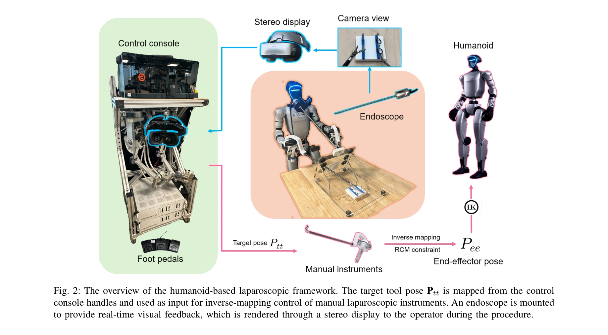
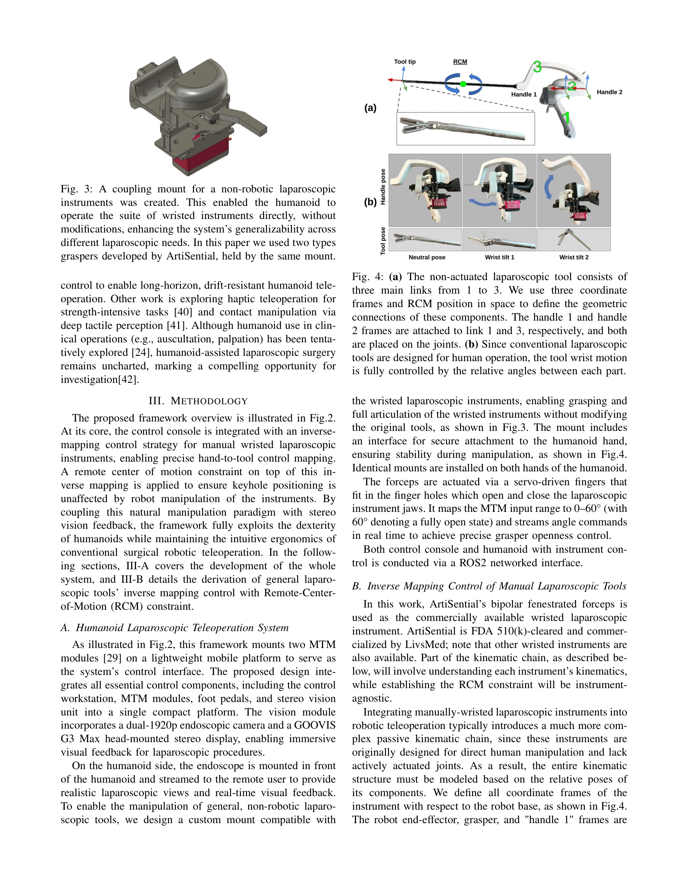
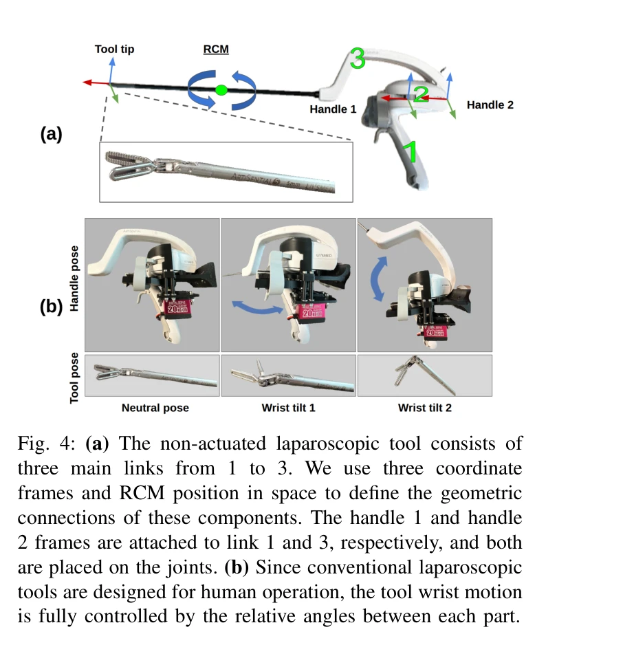

저자: Zekai Liang, Xiao Liang, Soofiyan Atar, Sreyan Das, Zoe Chiu, Peihan Zhang, Calvin Joyce, Florian Richter, Shanglei Liu, Michael C. Yip | 날짜: 2025-10-03 | URL: https://arxiv.org/abs/2510.03529

Fig. 2: The overview of the humanoid-based laparoscopic framework. The target tool pose Ptt is mapped from the control
LapSurgie는 인문형 로봇이 원격 조종을 통해 상용 복강경 수술 도구를 직접 조작할 수 있게 하는 최초의 텔레오퍼레이션 프레임워크로, 원격 중심 운동(RCM) 제약을 만족하는 역매핑 전략과 스테레오 비전 피드백을 통합한다.

Fig. 3: A coupling mount for a non-robotic laparoscopic

Fig. 4: (a) The non-actuated laparoscopic tool consists of
총평: LapSurgie는 인문형 로봇을 수술 영역에 처음 적용하고 RCM 제약 기반 역매핑 제어를 통해 상용 복강경 도구의 직관적 조작을 실현한 혁신적 연구로, 의료 자원 부족 지역에서의 로봇 수술 접근성 확대에 중요한 기여를 한다. 다만 임상 수준의 검증과 기술적 성숙도 향상이 필요하다.